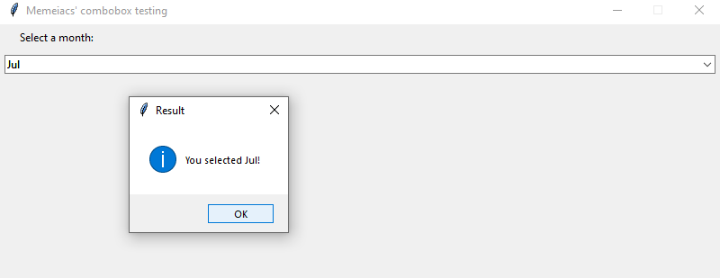

Project Ideas
Motivation
 The project began with our leader sending a proposal, or rather a pitch, to the whole team, asking for opinions. He hooked each member into becoming a part of the early-stage development team by expressing his love for photography and proposing a way to solve some common issues faced in this hobby, which have been elaborated above. This project is interesting because it is so relevant to everyday life, and saves a large sum of time. Current IT trends point to solving specific problems that would benefit society as a whole, whether it’s to further push humanity into a digitized world or to improve quality of life, and our motivation is consistent with the latter. To a future employer, this project shows that we are detailed, diligent, patient and especially, efficient.
The project began with our leader sending a proposal, or rather a pitch, to the whole team, asking for opinions. He hooked each member into becoming a part of the early-stage development team by expressing his love for photography and proposing a way to solve some common issues faced in this hobby, which have been elaborated above. This project is interesting because it is so relevant to everyday life, and saves a large sum of time. Current IT trends point to solving specific problems that would benefit society as a whole, whether it’s to further push humanity into a digitized world or to improve quality of life, and our motivation is consistent with the latter. To a future employer, this project shows that we are detailed, diligent, patient and especially, efficient.
Overview
Memeiacs’ Image Comparison Tool is a newly developed project, with first steps planned out and soon to be implemented. This project targets anyone able to take photos and have trouble organizing their photos.
Since the birth of cameras, and more importantly, affordable cameras, humanity is able to capture unlimited shots of their surroundings, memories, and time. With built-in cameras on smartphones, photo-taking is becoming a part of life, not just a luxury which was only possible at photography stores before. With such progression, less thought is put into taking the perfect shot at once, leading to an overwhelming pile of unorganized photos that would be time-consuming to manually sort. By continuously clicking the photo-taking button, people are left with a lot of similar photos only seconds apart from each other.
In this project, our Image Comparison Tool would work as a photo sorting program for easier access to groups of similar photos which leads to an easier process of choosing the best one.
Detailed Description
Aims
Our team's goal for the project is to use Python to construct an image comparison tool that will help us review photos. To accomplish this, the application must first be able to compare photos and identify those with comparable features using automatic comparison. This is made feasible by the code of the project, which will be demonstrated below.
Our team had designed a graphical user interface (GUI) from the ground up to enhance the program's usability. This is done to help the user visualize what is going on and to make it easier to use than CLI. This is arguably the most noticeable feature.
There is also a collection feature that allows us to create and delete collections. This will allow us to modify a collection on the fly. When we select a file, the application displays all of the photographs contained within it. We can then add the photos to a collection after comparing them. This will allow us to better organize our work, making it more efficient.
We have manual comparison in addition to automatic comparison. This will allow us to more precisely choose and make modifications based on our preferences. Our leader has also come up with a number of functions and features to assist us in manually comparing images and selecting the one that best meets our requirements.
Plans and Progress
1. Planning System
Image Comparison Process:
The software should read two directories: one from the "selected" image (the one we want to identify other images that are similar to), and the other from the image gallery (each image in the gallery is labeled "candidate"). The time it takes for the software to provide a list of perceptually comparable photographs in the gallery depends on the speed of our computers, but it should only take a few minutes (1 or 2 minutes) so that we can begin the manual evaluation.
The Difference Hashing technique is at the heart of our picture comparison program, and the principle of the process may be read here (Rosebrock 2017).Using the Difference Hashing algorithm, the two input photos (the "selected" and "candidate") are hashed into a string of values depending on their visual appearance. When two images have "similar" hash values, they are classified as duplicated or perceptually similar. "Similar" hashes are precisely the same or within a given Hamming Distance range (Coskun, et al. 2007).
The Difference Hashing Procedure is Broken Down into 4 Steps:
Step 1: Blurring the Image
Firstly, the image is blurred using the Average Blurring approach from (Coskun, et al. 2006). Due to the influence of nearby pixels, the difference between the corresponding pixels of the "selected" and "candidate" should be as little as possible. To calculate the mean values with the central pixel, the neighboring pixels are taken into the filter. The average value replaces the current value of the center pixel after the mean value is calculated. This method has been run for all of the pixels, indicating that the image has been blurred.
Step 2: Converting the colored image into Grayscale
Python supports the OpenCV Library, which may be found from Hacker Factor (2021). The cv2.imread() method converts the input colored image to grayscale. Every pixel's three-channel colors are transformed to a single gray channel when it is converted to grayscale. As a result, the hashing process is faster, and the comparison process benefits since minor differences in color hues are ignored, and the photos are compared only on the basis of comparable patterns.
Step 3: Resizing the image
After the image has been converted to a single grayscale color, it must be rescaled to exactly 8 * 9 pixels, regardless of the image's original resolution. To begin, scaling the photographs makes those of various sizes become the same size, making it easy to compare patterns. Second, we want to construct a 64-bit hashcode for each image so that we can compare them. Because 8 * 8 = 64 bits, we must scale to an 8*9-dimension because we will have 8 differences if we compare each of the 8 pixels in one column with the neighboring pixels in that row (total of 9 pixels in a row) (the comparison is executed with 2 different pixels, a pixel cannot compare to itself). Therefore, 8 column * 8 differences = 64-bit hashcode.
Step 4: Hashcode difference computation
Each pixel in an image is compared to the neighboring pixels in this process, and True is returned if the concurrent pixel has a higher value than the following pixel. If the concurrent pixel has a smaller value than the succeeding pixel, however, the output will return False. When the pixel comparison is finished, a boolean matrix is produced, which must be flattened into a single-dimension array and the total of elements calculated using the Python algorithm:
diff_hash = 0
arr = diff.flatten()
for i, val in enumerate(arr):
if val != 0:
diff_hash += 2**i
The picture comparison method, according to Hacker Factor (2013), is carried out by comparing the hash values of the photos that were just calculated. When the hash values of two photos have the same Hamming distance, they are deemed duplicated. Even if the Hamming distance between the two images between 1 and 10 is regarded as perceptually comparable, we should personalize this threshold to decide on resemblance based on our preferences.
Implementing the Graphical User Interface (GUI) using tkinter:
Create desktop application
A desktop application is needed to visualize the layout and design of a software which can be done using Python and tkinter following (Joy n.d.). Any library must first be imported into the code before it can be used. So, simply for the sake of convenience, let's import Tkinter under the alias 'tk.' When we need to utilize tk instead of Tkinter, we can do it now.
import tkinter as tk
The next step is to build a window. We may accomplish this by using the Tk() method to create a new Tkinter object. How we go about it is straightforward:
window=tk.Tk()
Our desktop application now has its own window. Let's see if we can give this window a name. The title() method can be used to accomplish this. We gave the application the name "Memeiacs' image comparison software" so that everyone can understand how to title it.
window.title(" Memeiacs' image comparison software " )
Let's define the app window's geometry for now. This refers to the width and height of the space. We can use the geometry() method to accomplish this. Let's say the width is 800 pixels and the height is 600 pixels.
window.geometry("600x800")
The window is now ready. For testing, let's print something on this window. We'll be shamelessly promoting our project once more. As a result, we will say, " Trust and use our image comparison tool, you will not regret seeing how it can wind up your image review day". tkinter's Label() method can be used to add text. The 'text' option should be filled with the string you want to display. We put everything into a variable called "newlabel".
newlabel = tk.Label(text = " Trust and use our image comparison tool, you will not regret seeing how it can wind up your image review day ")
Let's put this label on a grid now. Multiple grids are used to split the tkinter window.
Let's put it in the top-left corner of the grid (0,0).
newlabel.grid(column=0 ,row=0)
Almost everything has been completed. Finally, we must call the mainloop() method before running any tkinter program. It's the same as calling the main() program if you're familiar with the C programming language. Everything we've written above is executed by this main program. Let's call this loop the mainloop().
window.mainloop()
Our teeny-tiny desktop application is up and running. Let's put the software to the test in the Spyder IDE.
Create menu bar
The tkinter Menu bar is used to offer menu items that can provide additional functionality to an application, which is quite prevalent in software and applications following (here). Any library must first be imported into the code before it can be used. So, simply for the sake of convenience, let's import Tkinter under the alias 'tk.' When we need to utilize tk instead of Tkinter, we can do it now. Then, we import the ‘messagebox’ module from tkinter.
import tkinter as tk
from tkinter import *
from tkinter import messagebox
Instantiate the menu bar object using the following code:
menubar = Menu(window)
We start to create the options sequentially such as File, Edit, Library, Tool, View on the menu bar using this code:
file = Menu(menubar, tearoff = 1)
edit = Menu(menubar, tearoff = 0)
library = Menu(menubar, tearoff = 0)
tool = Menu(menubar, tearoff = 0)
view = Menu(menubar, tearoff = 0)
We can think of adding the functionalities in each option later but let’s having some selections in the ‘File’:
file.add_command(label = "New")
file.add_command(label = "Open")
file.add_command(label = "Save")
file.add_command(label = "Save as")
file.add_command(label = "Exit", command = window.quit)
menubar.add_cascade(label = "File", menu = file)
Further functionalities will be researched later but we firstly focusing on displaying the interface and only concern the functional Exit option that can properly work To get the menu bar displaying up and running, we config the menu with the window.config() method and call mainloop():
window.config(menu = menubar)
window.mainloop()
Our teeny-tiny desktop application is up and running with the menu bar displayed. Let's put the software to the test in the Spyder IDE.
Create comboboxes
A combobox is a widget that combines an Entry and a Listbox widget. A combobox widget lets you pick one value from a list of options. It also allows you to specify a custom value. Further implementation to get the actual values in the hard drive of computer and display on the software will be later discussed when the project has been funded and given more time; Therefore, we will focus on how to create a combobox with predefined values following the tutorial from (here). Any library must first be imported into the code before it can be used. So, simply for the sake of convenience, let's import Tkinter under the alias 'tk.' When we need to utilize Tkinter, we can go ‘tk’ instead. Please note that we need to further import the ‘ttk’ widget from the ‘tkinter’ library and it is different from the alias ‘tk’ we use above. Moreover, we need to import the showinfo() method from the messagebox extension.
import tkinter as tk
from tkinter import ttk
from tkinter.messagebox import showinfo
The ttk.Combobox() constructor is used to create a combobox widget. The code below generates a combobox widget and associates it with a string variable:
current_var = tk.StringVar()
combobox = ttk.combobox(container, textvariable = current_var)
The container is the window or frame on which the combobox widget will be shown. The textvariable argument connects a variable current var to the combobox's current value. You can use the current var variable to get the presently selected value:
current_value = current_var.get()
Instead, you can utilize the combobox object's get() method:
current_value = combobox.get()
The 'current var' variable or the set() method of the combobox object are used to set the current value:
current_value.set(new_value)
combobox.set(new_value)
The 'values' property of the combobox allows you to assign a list of values to it, as shown below:
combobox['values'] = ('value1', 'value2', 'value3')
You can input a custom value in the combobox by default. Set the state option to 'readonly' if you do not want to, following this code:
combobox['state'] = 'readonly'
OR if you want to re-enable editing the combobox, set this:
combobox['state'] = 'normal'
The combobox widget generates a 'ComboboxSelected>>' virtual event when a select value changes. You can use the bind() method to handle the event as follows:
combobox.bind( '<< ComboboxSelected >>', callback)
Which ‘callback’ here is the function that will execute when the selected value of the combobox changes.

View list of images
When it comes to a Graphical User Interface (GUI) program, the image(s) are quite important. The PhotoImage class is used in the tkinter package, which is available at (here), to display photos in labels, buttons, canvases, and text widgets, from the application icon to animation.
Using the PhotoImage() function to return an image object is all it takes to display an image in Python. However, the PhotoImage class only supports GIF and PGM/PPM formats, which is a concern. JPEG/JPG and PNG are the most widely used formats. ImageTk and Image classes from the PIL(Photo Image Library) package are required to open and display those formats. We can load photos in over 30 formats and transform them to image objects using PIL (Photo Imaging Library), including base64-encoded GIF files from strings.
canvas = Canvas(window, width = 1500, height = 1600)
canvas.pack()
img = ImageTk.PhotoImage(Image.open
("snow3.jpg")) # Paste in the directory,
# example: C:/Users/MDM/Downloads/collection/snow3.jpg
canvas.create_image(20, 20, anchor = NW, image = img)
window.mainloop()
The Image class contains an attribute "open()" that will open image formats that are not natively supported, and we can use it with "ImageTk.PhotoImage()" to return and use the image object.
If we want to display an image inside a function, make sure to keep track of it in your Python program by putting it in a global variable or attaching it to another object.
Mock views of the software’s GUI:
Homepage view
The software's layout will be designed as shown in the mock view above in order to give a user-friendly interface for the following features:
> In a scrolling list view, show a list of images.
After we choose a folder, all of the images inside that folder will be displayed in the list view at the bottom of the software, and they can be scrolled using the backward and forward arrows or use the scrolling wheel of your mouse to scroll through them.
> To create/delete a collection, follow these steps:
To make a new collection, go to the lower left side of the screen and click the "+" icon in the Collection frame to make a new one, then rename it by left-clicking on the "New Collection" default name.
Create a new collection
To delete a collection, go to the lower left side of the screen, to the Collection frame, then right-click on the collection you wish to delete, then select “Delete Collection”.
Delete a collection
> Choose an existing collection
To select an existing collection, go to the Collection frame and use your cursor to left-click on the collection you wish to select.
Choose an existing collection
> Select multiple images, right-click and choose option (duplicate, delete, rename, view resolution, compare with current “selected” image)
Right-click on numerous images then select an option (the options provided are: duplicate, delete, rename, view resolution, compare with current "selected" image).
+ To choose continuous photos, first click on the beginning image, then hold down the "Shift" key while clicking on the destination image in the image scroll list.
Multiple and continuous images selected in List view
+ Holding the "Ctrl" key on the keyboard and clicking on the images you want to pick on the image scroll list will select several but not continuous images.
We may duplicate, remove, rename, view resolution, and compare with the current "chosen" image by right-clicking on the selected images.
Multiple but not continuous images selected in List view
> To add files and folders to the collection, drag and drop them.
Choose a "selected" image by navigating to the image list at the bottom of the interface, then selecting, dragging, and dropping the image into the Navigator frame on the upper left with the mouse. The image displayed in the frame is now the current "chosen" image, as we can see.
> Activate automatic comparison.
To compare with images in the currently selected folder, go to the Navigator frame, right-click on the "selected" image, and select "Compare with images in the currently selected folder." The similar photos will be presented on the list view at the bottom of the interface once the comparison is complete.
Activate automatic comparison
> Activate manual comparison (Show “selected” and “candidate” next to each other)
After automatic image comparison, manual image comparison is usually performed so that users can select the best photographs from the group depending on their preferences by clicking on the icon located on the right side. The "selected" image and the "candidate" image will be displayed side by side when manual comparison is enabled.
Activate manual comparison
Functionalities provided in manual comparison
> Using the arrow icons to navigate through the "candidate" images: 
> By clicking on the icon, you can change the view side of the "chosen" and "candidate" images. The "selected" image is displayed on the left side by default.
Swap “candidate” and “selected” view side
> By clicking on the icon on the right side, you can replace the "selected" image with the current "candidate" image. When the user finds a "candidate" that is better than the "selected," the user replaces the "selected" with the "candidate" and continues looking for a better "candidate". May not worry because this feature does not delete any of your original images.
2. Working Progress
The project idea has come in firstly before the team was fully formed together as this is the idea of the project leader. Since there were only 3 people in the team, we have discussed to choose between developing a chatbot and different training programs that fits the scenario of each company and industry, an application that can connect multiple sale channels for easy management or an image comparison tool that can find not only the duplicated photos but also the perceptual similar ones. After several days of discussion, the team finalised the project idea with the image comparison tool due to its not only being an amazing, feasible idea but also the team can make use of the product to benefit personal needs. Feasibility was measured by how well each member of the team prepared the content, techniques and project scope evaluation that can fit in the timeframe of the project. Even though at the end of the course, the project might not be completed but the product can be used for demonstration and meets the personal needs of the team members.
The image comparison software’s scope started with only implementing the Difference Hash algorithm into the image comparison process. The proposed idea was initially rejected due to the fact that the scope was not large enough for an approximate project lifecycle of 3 to 4 months after the first assignment. At that time, a meeting was held for the team to redecide to keep following the current idea or not. It was a hard time for the team leader to defend his proposal of continuing with the idea. Even though it is the project leader’s idea, all members understand his desire to support him in enlarging the project scope as well as reviewing the timeframe. It took a few days for the team to find the feasibility in the image comparison project idea again since the scope has been broadened with more features and more stuff to catch the attention of the audience on demonstration day. We tend to add a user interface so that users can interact with our software in a more friendly way, if not people need to learn using the software on Terminal. We also implement manual comparison mode for the user to choose their favourite images on preference. The manual is not a difficult feature to be implemented but it appears to meet the slight demand of our user to be independent of the technology when selecting their favourite moment.
So far, there has been only one month to demonstrate the project to the audience. Due to time constraints, we can only finish constructing the image comparison algorithm - the heart of the software - which can be broken down into a few step using the flowchart below:
Roles
Since our team had already decided on team roles for assignment 2, we would use the same ones for assignment 3. The positions are: project leader, project designer, project manager, and secretary. Each job plays a critical role in the team project. We make certain that everyone has a role in order for everyone to contribute to the team.
Minh is the project manager. He is in charge of the project's conception and execution. He has been at the center of the project's development since its inception. He is in charge of the picture recognition tool's major features and basic logic. He is also the one who writes the report portion of the project proposal for assignment 2.
Thuy is the project manager for our team. She is in charge of reviewing and ensuring that everything in the team's report is up to quality. She also conducts research with the secretary in order to complete everything required for the project report. She will also ensure that the squad stays on track.
Khoa is our project designer. He is in charge of the team website as well as the team GitHub page. He created the website from the ground up and worked with his team to ensure that it was presentable. He also ensures that everything is in order and well organized. His most significant contributions to the team are the building of the team website and managing of the team's GitHub page.
Finally, Quan is our secretary. He does not have a definite duty to fulfill, yet he assists everyone in their work. He makes an effort to assist everyone with their tasks in order to lessen everyone's workload while also reminding everyone of the team's progress. The majority of the time, he does research and writes the team report. His most important contribution is probably the interview of an IT professional.
Scope and Limits
In this part we are going to define clearly what we are going to do, which functionality can be extended if the development is ahead of the project schedule and which cannot. The scope needs to be defined as clearly as we can in order not to have any issue with the stakeholders/clients during the development and the team can focus fully on what has been planned so far.
User Interface of the software will include some fundamental functionalities:
+ Minimize, maximize, close button located on the upper right corner, following the general convention of application.
+ Menu bar containing the following commands: File, Edit, Library, Tool, View.
+ The Navigator Frame displays the “Selected” image that can be activated in the automatic comparison mode to search for duplicated and perceptually similar images.
+ The Folder Frame displays the default hard drive where the software is installed. It scans for the folders and displays the number of images currently in those folders.
+ Under the Folder Frame is the Collection Frame which displays any collection created by the users, by default, the frame will be left blank because there is no collection yet. The collections can be renamed or deleted by right clicking to choose either the options.
+ At the bottom of the interface displaying a list of “Candidates”. By default, before activating the “automatic comparison” mode, the view will list out all images in the current collection. If there is no image in the current collection or no similar image is found after comparison, the list will be left blanked. In case the images are listed in the list after the “automatic comparison” process is finished, users can select multiple of those images either continuously or discontinuously for “manual comparison” mode. Moreover, the list of images can be scrolled forward and backward by navigating the mouse to the list and scrolling the middle mouse. Please note that currently we do not implement the feature of removing those images out of the list. In order to remove the image out of the list, you need to navigate the image in its original storage and delete it because users may remove those images unintentionally and leave unwanted redundant files in their computer.
Automatic comparison mode will function exactly what we are going to list out below:
+ The inputs of the algorithm includes 2 directories: One is for the “Selected” image and the other is for the “Candidate” collection. In order to input multiple “Selected” images, those images must be stored in a folder and the directory of that folder is inputted to the algorithm.
+ During the comparison process, the images are hashed and compared to identify which are the similar images. Currently, the software does not identify which image has been hashed previously. Therefore, based on the number of the “Candidates”, the comparison process might take time because all images are hashed again.
Manual comparison mode will function exactly what we are going to list out below:
+ Click on the button on the right side of the UI to activate “manual comparison” mode. When the mode is activated, the “Selected” view and the “Candidate” view will display side by side.
+ A list of “Candidates” images can be swiped backward or forward using the arrow buttons  while the “Selected” view remains the same image for the user to compare.
while the “Selected” view remains the same image for the user to compare.
+ By default, when the “manual comparison” mode is activated, the “Selected” view will display on the left side and the “Candidate” view will display on the right side. By clicking on button, the “Selected” view and the “Candidate” view will swap their position, which means if the “Selected” view previously stays on the left side, it will now stay on the right side and vice versa, same principle applies to “Candidate” view.
+ By clicking the button, the current “Selected” image will be assigned with the current “Candidate” image. If only the user browses to the next “Candidate” image, the “Selected” view and “Candidate” view will have the same image.
Tools and Technology
> Python:
a computer language that is extremely popular right now due to its ease of use when compared to other programming languages. Many typical activities, such as reading a website, processing text or data formats like JSON, or crunching statistics, need less lines of code with Python. Python is also powerful enough to be used to construct enterprise-grade software. Companies like Pinterest, Dropbox, and Quora use Python to build their offerings and handle automation. Installing Python on your PC is simple thanks to the instructions provided in this link
> An Integrated Development Environment (IDE):
Our team decided to use Spyder, an open source environment built for developing Python programs and giving a robust debugging tool, for this project. Spyder can be downloaded by following the steps outlined in this link
> OpenCV:
Abbreviation for OpenSource Computer Vision, one of the most popular open source libraries for computer vision and image processing tasks in the C ++, Java, or MATLAB community, as well as Python. OpenCV can be installed using the steps in this link
> Difference hash:
Is one of the choices of hashing algorithm when it comes to perceptually comparing photographs output exactly the same or only a few different bits of hashcode, this hashing algorithm is well recognized for its use in comparing images (Currier 2019).
> tkinter:
A standard library for creating graphical user interfaces for Python programs. 'tkinter' is considered by Python developers to be the simplest and fastest way to design a user interface. It's worth noting that 'tkinter' and 'Tkinter' are two separate libraries that support different Python versions. The 'tkinter' module is only compatible with Python 2.x, while the 'tkinter' module is only compatible with Python 3.x and higher. Because our team has decided to utilize Python 3.8 for this project, the instructions for installing tkinter can be found in this link
> Figma:
Figma is a graphics editing and user interface design program that runs on the browser. It can be used for everything from wireframing websites to building mobile app interfaces, prototyping designs, crafting social media posts, and everything in between. It is not like other graphics editing software. Mostly because it operates completely within your browser. This means you can access your projects and begin designing from any computer or platform without purchasing numerous licenses or installing software. In terms of teamwork, it clearly outperforms Sketch. Figma, like Google Docs, allows numerous designers to work on the same document at the same time.
Testing
1.Development testing
At the beginning of the development process, the image comparison is implemented gradually step by step in the following steps:
+ Blur the image: A formula is constructed to receive a 2-d matrix which shows colors of the pixels under hex value and output the resulting image into a file so that we can see that the image has been blurred or not with our own eyes.
+ Resize the image: A formula is constructed to receive a 2-d matrix which shows colors of the pixels under hex value and output the resulting image into a file that has exactly 8*9 pixels so that we can see that the image has been rescaled or not with our own eyes.
+ Convert the colored image to grayscale: A formula is constructed to receive a 2-d matrix which has the size of 8*9 pixels and output the resulting image into a file so that we can see that the image has been converted to single grayscale color or not with our own eyes.
+ Compute the hash value: A formula is constructed to receive a 2-d matrix which has the size of grayscale-colored 8*9 pixels then it is flattened into a single dimensional string
After the image comparison has been developed and tested successfully, the test data has to be prepared for the team to test the accuracy of the algorithm. Firstly, the set of low resolution images (under 1000 pixels on each side) is found and downloaded from the Internet. Secondly, some of the images are taken out for slight modification at different levels using Paint 3D software. Those modified images will be the “Selected” and the whole image set will be the “Candidate”. The test process is tested by inputting the “Selected” images to see how heavily modified the “Selected” is which makes the software unable to find its original in the “Candidate” set. Please note that the algorithm can be tuned with some simple variables so the test process can help the development team tune the exact value that fits the certain accuracy of the algorithm.
There are several modifications that can be made to the test data such as changes in color, erase some of the parts of the object in the image, crop the image, display just part of the image. Therefore, we found out that the algorithm currently has drawbacks in certain cases:
1.Unable to find the perceptually similar images: If the “candidate” image is cropped or moved just one line/column of pixels, the algorithm cannot detect that “Candidate” image based on the “Selected” anymore
2.Performance issue: Each comparison command scans through and hashes all images in the directory which might take a certain time if the size is too big. As we all know the golden rule is we should not let users wait for more than 3 seconds (here). The software cannot detect the images that has been scanned through in previous command so it has to hash again
2.User testing
Taking advantage of user testing is one of the fastest methods to finish an application optimally. The plan for finding user testing for Memeiacs image comparison tool:
- Currently, technology website platforms create more opportunities for netizens to give their reports as well as assessments about technology products. Especially Reddit, usertesting(but with income). Beside those platforms, applications are integrated underground softwares that allow users to create reports whenever the application goes strange or not responsible(bugs) to resend to company’s developer sections.
+ Updating tool beta to social media (tech groups) or Reddit without any fee with hope to get assessments from netizens. Beside the internet, surrounding people(classmates, family members) is another source to exploit their experience when trying the tool.
+ Publishing fee for testing the tool through finding work websites(ex. Career building). This is fair because users give us experience and time when we can take advantage of this to improve the tool perfectly.
+ Integrating feedback section and underground testing program into the tool that allow users to write their feedback as well as report about bugs when using the tool.
- The number of users: approximately 4 users
+ First user: testing the display of the comparison tool. We will collect the data about how the tool is friendly with the user.
+ Second user: opening every feature once. We will summarize what features are wrong when running.
+ Third user: testing deeply every feature one more time. We will find out exactly the bugs to save it for fixing the tool and repairing fixed patches.
+ The fourth user: This user will be the important one. Testing sides of every feature such as algorithms, results and logics when continuously giving random input to get results from the tools.
- Maybe the application needs more than 4 test users to finish this tool to become able to run. But the estimated number the tool needs to be fixed for first deployment is approximate 4.